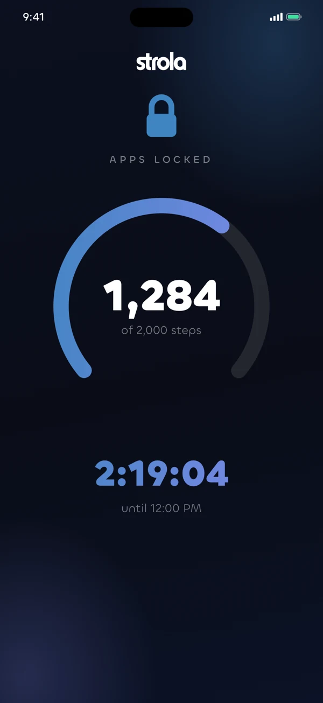
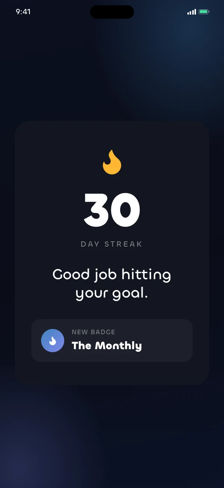
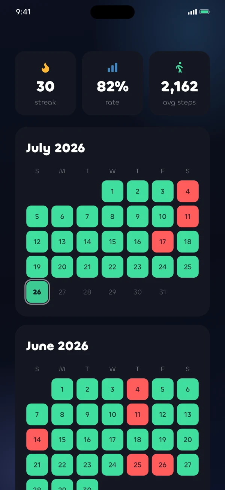

Walk first.
Then your apps.
Strola locks the apps that eat your morning until you've walked your step goal. You don't have to argue with yourself about it. The apps open when the steps are done.
How it works
You set the terms, then Strola holds you to them.
Three things to decide, and you only decide them once. After that the app is the same every morning until the walk is done.
Pick your apps
Whatever it is that gets you. Social apps, video, games, or one specific offender. Strola shields them with Apple's Screen Time technology, which means the block holds.
Set your steps and window
Anywhere from 500 to 10,000 steps, and the hours it applies. Most people put the window over the morning, because that is when the scrolling tends to happen.
Walk to unlock
Your iPhone and Apple Watch count the steps. Hit the goal and the apps open early, with a small celebration when they do.
The app
What a morning looks like.
Your apps stay shut while the dial fills. When it fills, they open and the day gets a green square. That is the whole loop, and it is the same every morning.



The streak
The streak is the part that sticks.
Every completed walk fills in a day on your calendar and adds one to the number on the flame. Miss a day and the number goes back to zero, which turns out to be a surprisingly effective reason to put your shoes on.
- Widgets put the streak on your home and lock screen.
- Live Activity counts your walk down in the Dynamic Island.
- Badges mark the milestones, including the comeback after a missed day.
- Share cards turn a good week into something you can send.
Pricing
The walk is free, and it stays free.
Blocking, streaks, and your full history are not behind a paywall and will not be. Strola+ adds the extras that put the walk on your home screen and lock screen.
Strola
Free forever
- App blocking with a daily window
- Step goal, streaks & full history
- Badges and celebrations
- Home & lock screen widget
- Screen time insights
Strola+
$4.99/month · $29.99/year with 7-day free trial · $49.99 once
- Everything in free
- Live Activity & Dynamic Island
- The full-width home widget
- New Strola+ features as they ship
Subscriptions renew until you cancel them in Settings. Lifetime is a single payment.
Privacy
There is no account, and no server of ours.
Strola reads your step count on the device and it stays there. We also can't see which apps you block, because Apple's Screen Time design hands the app opaque tokens rather than names. The only thing that ever leaves your phone is an anonymous count of which features get used, and you can turn that off in Settings.
FAQ
Questions people ask first
Can't I just delete the app to get around it?
You could. Strola is a commitment device and it does not pretend otherwise. What tends to happen is that deleting the app takes more effort than the walk does, especially with a streak on the line, so most of the time people just go outside.
Does it count steps from my Apple Watch?
Yes. Strola reads steps from your iPhone's motion sensors and from Apple Health, which includes your Watch. Whichever source reports more is the one that counts, so a walk with the phone in your pocket and a walk with only the Watch both work.
What happens if I miss a day?
The day shows up on your calendar as a miss and the streak resets. There is a badge for the comeback, which helps more than you would expect. Either way your apps unlock when the window ends. Strola will not lock you out all day.
Which apps can it block?
Any app, category, or website you pick in Apple's Screen Time picker. Strola never sees the list itself, because Apple keeps that private by design.
Is my health data safe?
Your step counts are read on the device and are never transmitted anywhere. There is no server and no account. The privacy policy has the full detail.